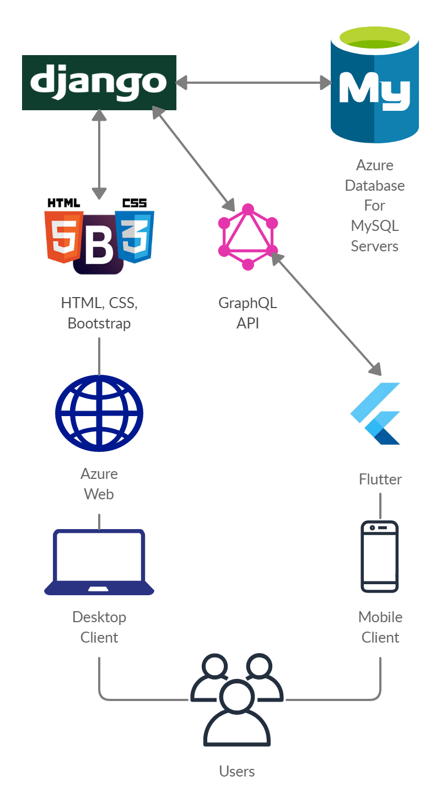

A technology stack is a combination of different programming languages and architectures one may use for the development of their application. There are no fixed rules for selecting a tech stack, you just need to go ahead with what works for you! But ideally, we work with tech stacks that integrate well - for example, using a Django backend with a MySQL database and ReactJS frontend is a rather popular choice.
On this website, you can find information about a working tech stack, that will let you build a mobile app and web app connected to the same database
with resources that will help you learn in implementation and finally have a deployed application!
This is the tech stack we will be focusing on:

We're going to come up with more tech stacks in the future, so hang in there!